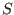
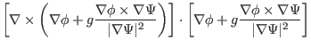
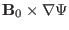
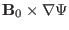
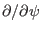

The negative local magnetic shear is defined by
There are two ways of calculating . The first way is to calculate in
cylindrical coordinate system; the second one is in flux coordinate system.
Next, consider the first way. We have
Using this, Eq. (284) is written as
|
 |
 |
|
| |
|
|
(286) |
Next, we work in cylindrical coordinates and obtain
|
|
|
(287) |
and
Using Eq. (288), Eq. (286) is written as
The two partial derivatives appearing in the above equation can be calculated
to give
|
|
|
|
| |
|
|
(290) |
|
|
|
|
| |
|
|
(291) |
Using these, we obtain
(The above results for has been verified by using Mathematica Software.)
The results calculated by using Eq. (292) are plotted in Fig.
32.
Figure 32:
The local magnetic shear as a function of the
poloidal angle. The different lines corresponds to the shear on different
magnetic surfaces. The stars correspond to the values of the shear on the
boundary magnetic surface while the plus signs correspond to the value on
the innermost magnetic surface (the magnetic surface adjacent to the
magnetic axis). The equilibrium is a Solovev equilibrium.
|
Next, we consider the calculation of in the flux coordinates system
 . The
 term can be
written as
. The
 term can be
written as
By using the curl formula in generalized coordinates
,
we obtain
|
|
|
|
| |
|
|
(295) |
Using Eqs. (294) and (295), the negative local magnetic
shear [Eq. (284)] is written as
Note that the partial derivatives
 and
in Eq. (296) is taken in the
coordinates and they are usually different from their counterparts in
 coordinates. In Eq. (296), the partial derivatives
are operating on equilibrium quantity, which is independent of
coordinates. In Eq. (296), the partial derivatives
are operating on equilibrium quantity, which is independent of  and
and
 . In this case, the partial derivatives in the two sets of coordinates
are equal to each other. Figure 33 plots the poloidal dependence
of local magnetic shear and
.
. In this case, the partial derivatives in the two sets of coordinates
are equal to each other. Figure 33 plots the poloidal dependence
of local magnetic shear and
.
Figure 33:
The local magnetic shear (left) and
(right) as a function of the poloidal angle. The different lines
corresponds to the shear on different magnetic surfaces. The stars
correspond to the values of the shear on the boundary magnetic surface while
the plus signs correspond to the value on the innermost magnetic surface
(the magnetic surface adjacent to the magnetic axis). The equilibrium is a
Solovev equilibrium.
|
Next, let us examine the flux surface average of , which is written as
Note that the global safety factor is given by
Using this, equation (297) is written as
Equation (299) provides a way to verify the correctness of the
numerical implementation of . Figure 34 compares
with
 , which shows that the two results agree with each other well.
, which shows that the two results agree with each other well.
Figure 34:
(solid line) and
(plus mark) as a
function of the radial coordinate
 (
is
the normalized poloidal magnetic flux). The equilibrium is a Solovev
equilibrium.
(
is
the normalized poloidal magnetic flux). The equilibrium is a Solovev
equilibrium.
|
yj
2015-09-04